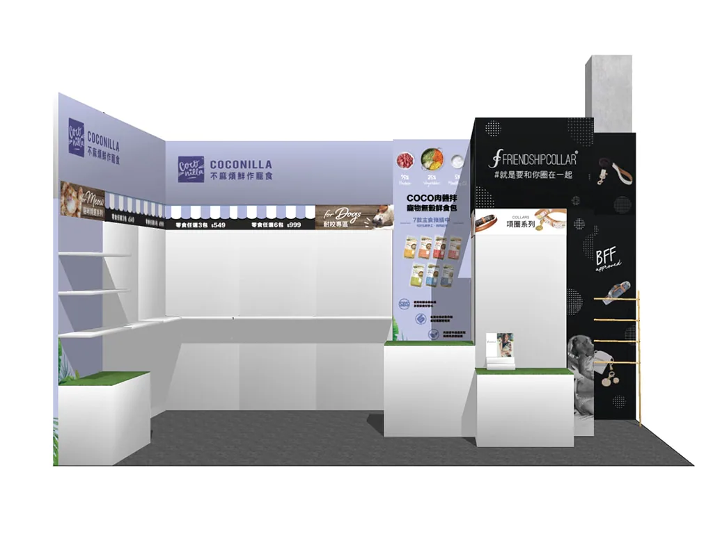
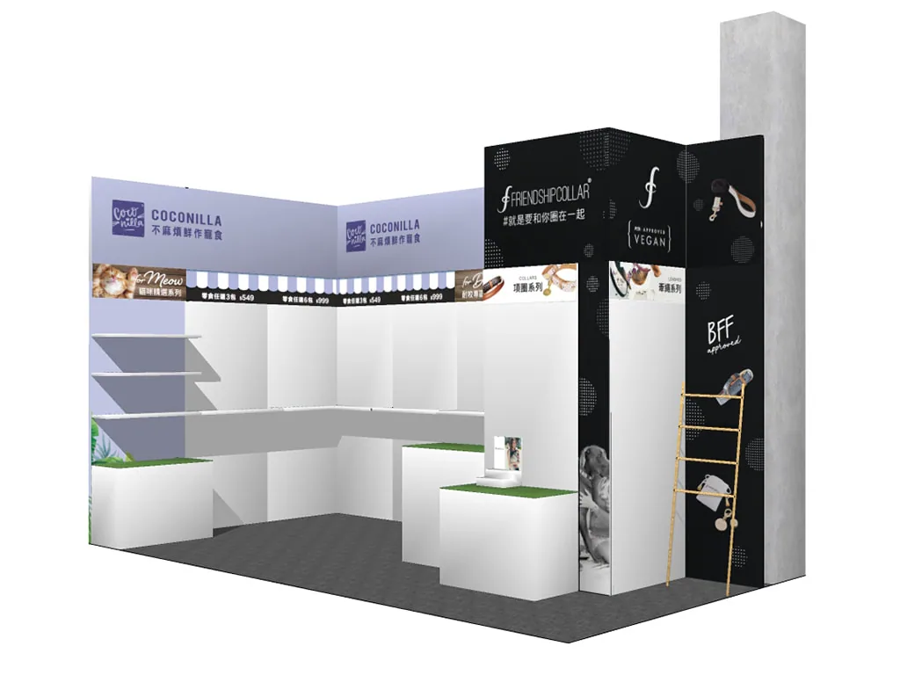
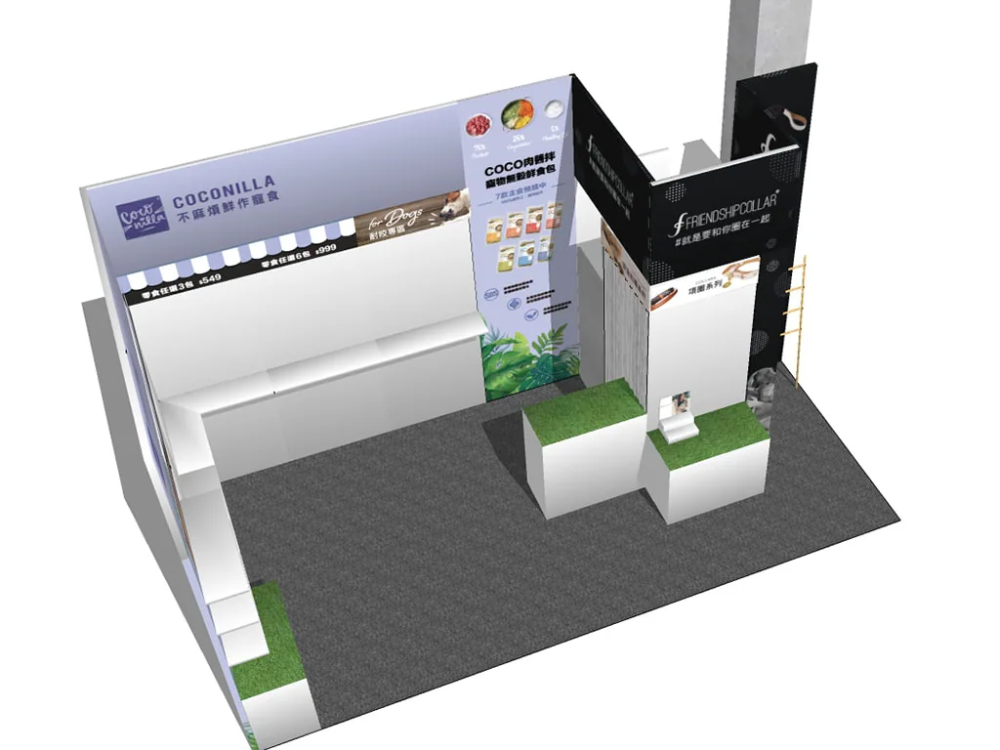
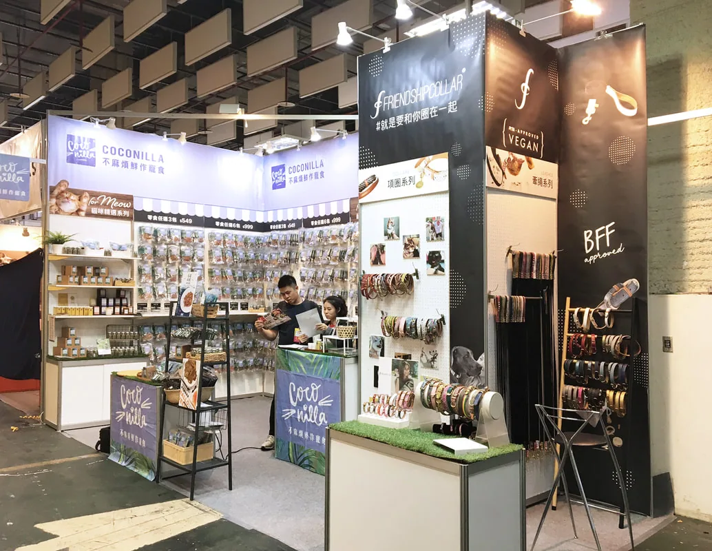
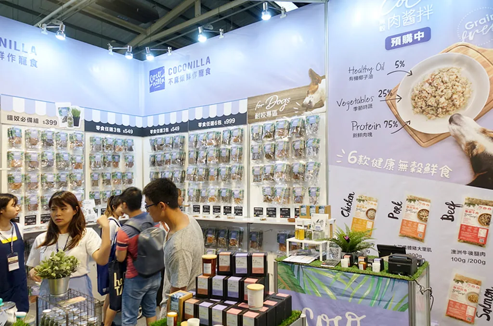
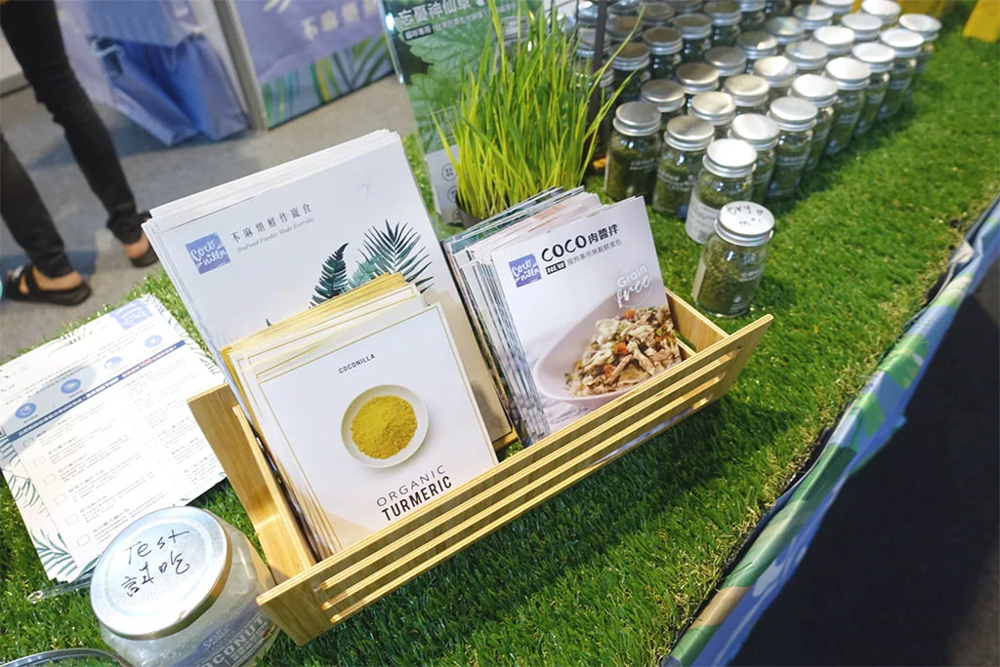

平面設計 ／ 展場陳列設計
沛麋股份有限公司 寵物展
2D/3D Design: Olga Yang
Date: 2015-2018
■ Company -沛麋股份有限公司
■ Brand – Coconilla不麻煩鮮作寵食 、Friendship Collar好友圈
沛麋股份有限公司旗下兩大品牌之特色皆訴求有機、環保、健康與寵物友善。因此在空間上，各自採用品牌之代表色作為色彩計畫主軸，再搭配大量綠色植栽、及販售的有機貓草來作為空間圍塑的材料。而為講求環保，大部分的輸出物皆會繼續沿用。











